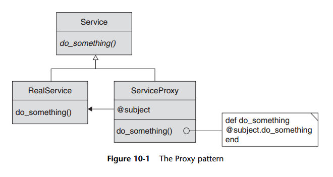

Proxy pattern
In this chapter, we looked at three different problems: protecting an object from unauthorized
access, hiding the fact that this object really lives somewhere else on the network,
and delaying the creation of an expensive object until the last possible instant.
Remarkably, all of these problems find a common solution in the Proxy pattern.
Proxies are the con artists of the programming world: They pretend to be some other
object when they are not, in fact, that object. Inside the proxy is hidden a reference to
the other, real object—an object that the GoF referred to as the subject.
Nevertheless, the proxy does not just act as a method call conduit for the subject.
Instead, it serves as a pinch point between the client and the subject. “Is this operation
authorized?” asks the protection proxy. “Does the subject actually live on this
other machine?” asks the remote proxy. “Have I actually created the subject yet?” asks
the virtual proxy. In short, the proxy controls access to the subject. We also saw in this
chapter how using the method_missing technique can substantially reduce the coding
burden of building proxies.
